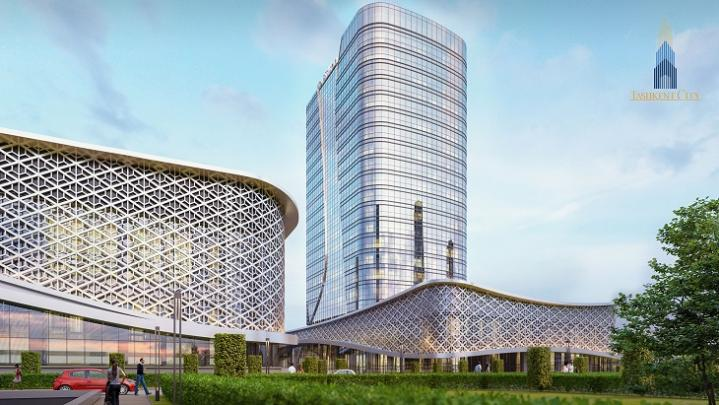
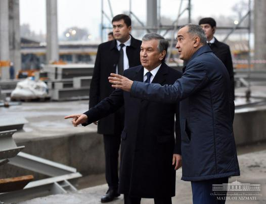

О Ташкенте
Ташкент — столица и крупнейший город Узбекистана, город республиканского подчинения. Крупнейший по численности населения город Центральной Азии (2 554 900 человек) центр Ташкентской городской агломерации, важнейший политический, экономический, культурный и научный центр страны, а также авиационный, железнодорожный и автомобильный узел. Он расположен на северо-востоке страны недалеко от границы с Казахстаном.Ташкент — 4-й город в СНГ по численности населения. Является одним из древнейших городов Центральной Азии — в 2009 году отмечалось 2200-летие города. В Ташкенте находятся государственные органы власти, посольства иностранных государств, штаб-квартиры большинства крупнейших узбекистанских коммерческих организаций и общественных объединений. Сегодня, будучи столицей независимого Узбекистана, Ташкент сохраняет многонациональное население, причем этнические узбеки составляют большинство.

Государственный музей истории Тимуридов — музей в центре Ташкента, посвящённый истории Средней Азии в период правления Амира Тимура и представителей основанной им династии. Музей входит в «Список государственных уникальных научных объектов» Республики Узбекистан. В музее находится более 5 тысяч экспонатов, относящихся к эпохе правления Тимура и династии Тимуридов.

Кратко о Ташкенте
Ташкент – столица Узбекистана, которая славится многочисленными музеями и сочетанием современной и советской архитектуры. В Музее истории Тимуридов хранятся манускрипты, оружие и другие реликвии знаменитой династии. Рядом расположен огромный Музей истории Узбекистана, где представлены древние буддийские артефакты. Над городом возвышается Ташкентская телебашня, со смотровой площадки которой открывается панорамный вид на город.
Новости

Кто и почему вкладывает в Tashkent City?
Работы над проектом Tashkent City продолжаются более года. Растут ввысь высотные сооружения, процессы на стройплощадке...

Шавкат Мирзиёев ознакомился с ходом строительства Tashkent City
Президент Узбекистана 20 ноября вновь ознакомился с ходом строительства международного делового центра Tashkent City, сообщает...
Кто и почему вкладывает в Tashkent City?
Работы над проектом Tashkent City продолжаются более года. Растут ввысь высотные сооружения, процессы на стройплощадке ...